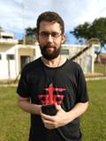

Rogério do Carmo
Mobile React Native Developer
Specialist in building cross-platform mobile applications for enterprise clients.

Experience
- Senior Mobile Front-End Developer — Topaz (2023–Present)
- Mobile Developer React Native — Rubcube (2022–2023)
- Flutter Developer — Rubcube (2021–2022)
- Android/Flutter Developer — Engeselt (2021–2021)
- Research Member — Master's (UNESP) — INCT GNSS-NavAer (2019–2023)
- Master's in Cartographic Sciences — UNESP - São Paulo State University "Júlio de Mesquita Filho" (2019–2023)
- Bachelor's in Computer Science — UNESP - São Paulo State University "Júlio de Mesquita Filho" (2014–2018)
- São Paulo State University — UNESP - São Paulo State University "Júlio de Mesquita Filho" (2014–2023)
Projects
- GNSS Skyplot — Real-time 3D globe and polar skyplot showing which GPS, Galileo, BeiDou and GLONASS satellites are above you right now, computed entirely in the browser from today's broadcast ephemerides
- offline-detector — Headless connectivity detector for React and React Native that confirms real internet access, not just the browser's online flag, with ready-made snackbar, banner and indicator UI. Published on npm, early development (0.x)
- OmniMorse — Morse code translator for Android and iOS (type, speak or tap it in; play it back as sound, flash, screen or vibration), built as a case study in hexagonal architecture and testing. Available now on the App Store
- Miroji — Front-camera mirror app published on the App Store, Google Play and F-Droid, used as a case study in hexagonal architecture, automated testing and CI/CD
- INCT GNSS App — Android application for real-time collection and processing of raw GNSS data, generating RINEX files and Single Point Positioning (SPP) solutions
- Android Native Crud — Sample application built to study the Android environment, exploring its fundamental components and development patterns
Skills
- Mobile Development: React Native, Native Android (Java), TypeScript, JavaScript
- State Management & Architecture: Redux/Saga, Jotai, TankStack
- UI & Styling: React Native StyleSheet, Styled Components, React JS
- Forms & Validation: react-hook-form, Form Validation
- Testing: Jest, Unit Testing, Playwright, End-to-End Tests
- Firebase & Cloud Services: Firebase Analytics, Firebase Crashlytics, Firebase Distribution, Firebase Storage
- APIs & Integration: REST APIs, AsyncStorage, MongoDB
- Internationalization: i18next, App Localization
- Native Modules & Integrations: Expo Modules, Daon (Biometrics), Qualtrics
- Database & Storage: SQFlite, AsyncStorage, MongoDB
- Maps & Location: OpenStreetMaps, GNSS/GPS, Geolocation
- DevOps & CI/CD: Google Play Console, Apple Developer, TestFlight, Jenkins, Fastlane, Git/GitHub/GitLab
- Monitoring & Analytics: Elastic, Kibana, Grafana
- Project Management: Jira, Confluence, Agile Methodologies
- Backend & Desktop: Java, Java Swing, Python, C++
- Domain Knowledge: Pix System (DICT), Banking Applications, Biometrics & Authentication, Image Processing, Cartographic Sciences
- Languages: Portuguese (Native), English (Upper-Intermediate B2)
- Soft Skills: Stakeholder Communication, Developer Mentoring, Teamwork, Problem Solving, Agile Methodologies
Full site